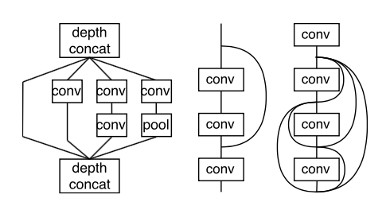

|
王林楠 (Linnan Wang)
Office 351, CIT
Department of Computer Science
Brown University
Providence, RI 02906
Email: wangnan318@gmail.com
Google Scholar
|
GitHub
|
LinkedIn
|
Brief Bio:
I'm a Ph.D. student at the CS department of Brown University, currently advised by Prof. Tim Kraska .
Before Brown, I was a OMSCS student at Gatech while being a full time software developer at Dow Jones
. I acquired my bachelor degree from
University of Electronic Science and Technology of China (UESTC) at the beautiful Qing Shui He campus in 2011.
My research interests are Supercomputing and Neural Networks. Particularly I'm really into scaling
the coolest ML algorithms on top500 supercomputers or multiGPU shared memory machines.
It also makes me very excited in inventing new ML algorithms to make impossible possible.
I work closely with Zenglin Xu in ML,
and I work closely with Wei Wu,
George Bosilca,
Jack Dongarra,
Yang Yi in Supercomputing.
in Submission:
 |
|
Xi Luo, Wei Wu, George Bosilca, Thananon Patinyasakdikul, Linnan Wang, Jack Dongarra
ADAPT: An Event-based Adaptive Collective Communication Framework
|
|
|
|  |
|
L. Wang, et al
SuperNeurons:Dynamic GPU Memory Management for Training Deep Nonlinear Neural Networks
|
|
|
Publications:
2017
2016
Patent:
Awards:
- Brown Fellowship (2017-2018)
Academic Services:
- Reviewer of Journal of Machine Learning Research (JMLR), 2017
- Reviewer of Neural Information Processing System (NIPS), 2016
Professional Experiences:
- Research Intern, NEC Labs, 2016.Aug ~ 2017.Jan
- Software Developer, Dow Jones, 2014.Aug ~ 2016.Aug